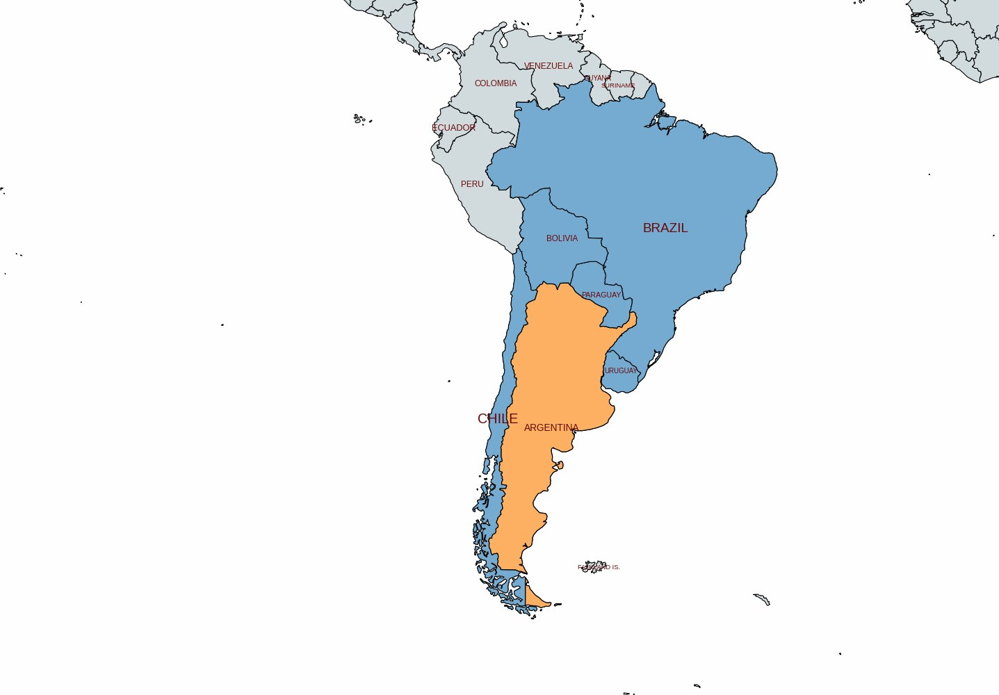
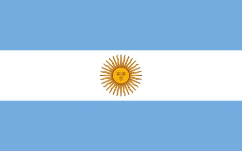
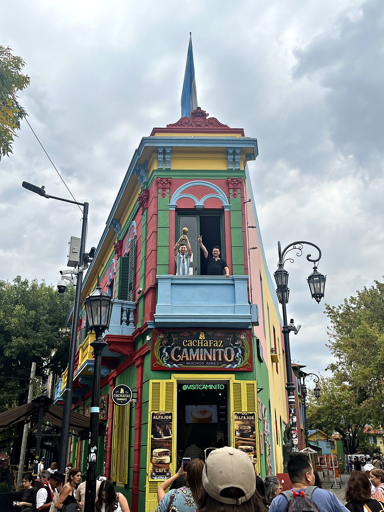
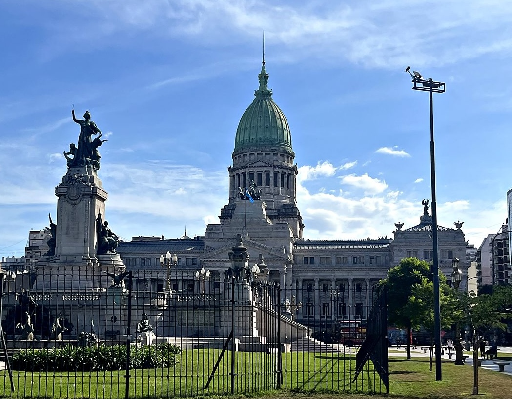
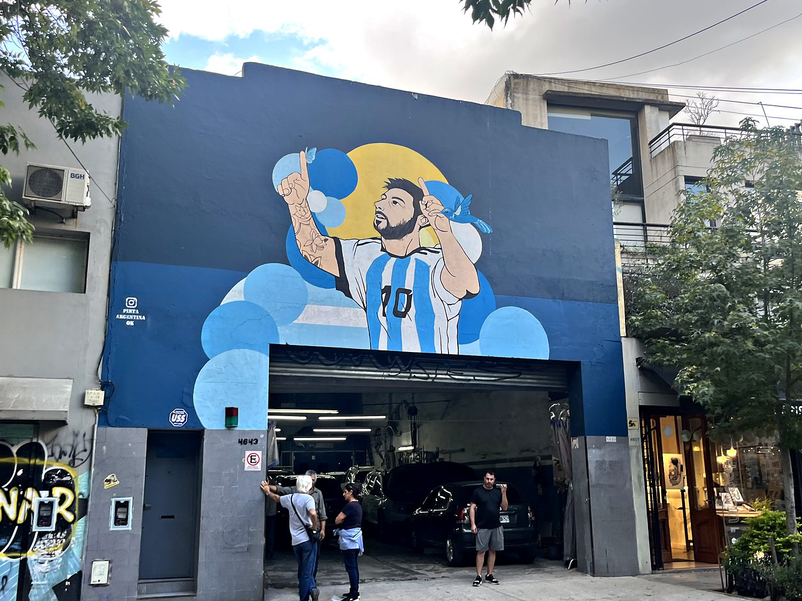

I wish I could say that my arrival to Argentina was a smooth and joyous affair, but alas such a statement would be the greatest lie since Hitler told Stalin they were BFFs. I arrived in Buenos Aires by ferry from Uruguay and dove into an epic, hours-long duel with the Argentine mobile-phone system. This saga involved four separate shops, three failed SIM cards, and a slowly dawning suspicion that the entire country was playing an elaborate prank at my expense. That night, the hotel I had carefully booked online turned out to be a padlocked gate, behind which the only respondents to my increasingly desperate knocking were several deeply unimpressed and very loud dogs. Buenos Aires and I did not begin on the best of terms, but the city’s charm eventually won me over nonetheless.
Buenos Aires is called the “Paris of South America,” and for once the cliché is earned. It is a sweeping, elegant city with wide boulevards, grand belle-époque palaces, and leafy plazas, built largely by the 20th century wave of Italian and Spanish immigrants. At its symbolic heart sits the Plaza de Mayo and the Casa Rosada, the famous pink presidential palace pictured above, from whose balcony Juan and Eva Perón once roused adoring crowds. It is also where the Mothers of the Plaza de Mayo have marched every week for decades, demanding answers about the children the state disappeared during Argentina’s military rule. It is a city where breathtaking beauty and deep national trauma share the same few blocks, frequently at the same time.

Few countries have a stranger economic trajectory than Argentina. After winning independence in 1816 and overflowing with European immigrants, it grew rich on beef and wheat. By 1900 it had become one of the wealthiest nations on the planet, with a higher per capita on par with France or Germany. Then, over the following century, it pulled off the almost unheard-of feat of getting steadily poorer, lurching through coups, crises, and defaults in a manner that has made “Argentine economics” a cautionary genre unto itself. Presiding over the pivotal chapter were Juan Perón and his glamorous, beloved, and fiercely divisive wife Eva (“Evita”). Their blend of populism, labor politics, and sheer personal charisma created a movement, Peronism, so durable that Argentine politics is still, three-quarters of a century later, largely organized around whether one is for it or against it.

The darkest years came in the 1970s and 1980s. A military junta seized power in 1976 and waged a “Dirty War” against its own citizens, kidnapping, torturing, and murdering as many as 30,000 people called the desaparecidos (“disappeared”). Many of them were young students and activists, and some were dropped alive from planes into the sea. It was the mothers and grandmothers of these victims who became the junta's most implacable opponents, their weekly vigil in the Plaza de Mayo helping to shame the regime before the world. The dictatorship finally collapsed in 1983, hastened by its humiliating defeat in the 1982 war with Britain over the Falkland Islands, which Argentines call the Malvinas and still consider their own. Democracy has held ever since, even as the economy has kept up its now-traditional habit of periodically detonating, most spectacularly in the great collapse of 2001.
No neighborhood captures the immigrant soul of Buenos Aires like La Boca, the old port district where the first waves of Italian arrivals settled. Its famous little street, the Caminito, is lined with houses painted in every color the shipyards happened to have leftover paint for. It is unabashedly touristic now, a gauntlet of tango dancers, souvenir stalls, and eye-watering prices, but the riot of color is genuinely joyful. The neighborhood remains the spiritual home of both tango and Boca Juniors, the football club whose most famous son, a certain Diego Maradona, is venerated here roughly as often as the saints.

The Palacio del Congreso, Argentina's domed parliament, was completed in 1906 at the height of the country's golden age. Its sheer grandeur is itself a kind of historical document — the confident architecture of a nation that fully expected to become one of the great powers of the world. In 2023, Argentinians elected Javier Milei, a libertarian politician who won by promising to take firm action to get the nation’s economy back in line. His opponents criticize him for having far right positions on the economy and on social issues like abortion. His supporters appreciate that the austerity measures he took on brought inflation down to 31% in 2025, which is sad to say pretty good by Argentine standards. Nevertheless, this took a hard toll on the economy, and the nation has a long ways to go before it becomes the economic power it once was.

If there is one thing capable of uniting Argentina, it is football, which is less a sport than a national theology. This mural of Lionel Messi, wrapped in sky-blue and white, is one of countless shrines to the man who, in 2022, at long last delivered the World Cup that Argentines felt the universe frankly owed them, completing a holy lineage that runs from Maradona to Messi. I initially found the football-worship to be excessive, but came to grudgingly appreciate how a sport can bring unity to a country’s people, and provide hope and joy for millions of people, especially during times of financial difficulties.
